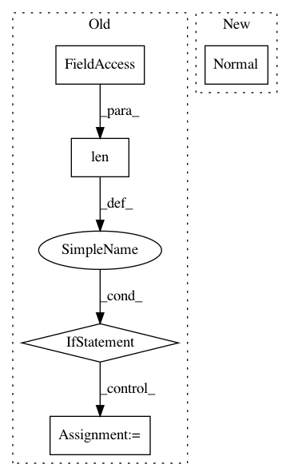

cbfd111192d2b1ed7a43ebfac3178d31b844b4cd,gpytorch/likelihoods/gaussian_likelihood.py,_GaussianLikelihoodBase,forward,#_GaussianLikelihoodBase#Any#,20
Before Change
if not isinstance(input, MultivariateNormal):
raise ValueError("Gaussian likelihoods require a MultivariateNormal input")
mean, covar = input.mean, input.lazy_covariance_matrix
if len(params) > 0:
// we can infer the shape from the params
shape = None
else:
// here shape[:-1] is the batch shape requested, and shape[-1] is `n`, the number of points
shape = mean.shape
noise_covar = self.noise_covar(*params, shape=shape)
full_covar = covar + noise_covar
return input.__class__(mean, full_covar)
After Change
return self.noise_covar(*params, shape=shape)
def forward(self, function_samples, *params, **kwargs):
return base_distributions.Normal(
function_samples, self._shaped_noise_covar(function_samples.shape, *params).diag()
)
def marginal(self, function_dist, *params, **kwargs):
mean, covar = function_dist.mean, function_dist.lazy_covariance_matrix
full_covar = covar + self._shaped_noise_covar(mean.shape, *params)
In pattern: SUPERPATTERN
Frequency: 3
Non-data size: 5
Instances
Project Name: cornellius-gp/gpytorch
Commit Name: cbfd111192d2b1ed7a43ebfac3178d31b844b4cd
Time: 2019-03-26
Author: gpleiss@gmail.com
File Name: gpytorch/likelihoods/gaussian_likelihood.py
Class Name: _GaussianLikelihoodBase
Method Name: forward
Project Name: cornellius-gp/gpytorch
Commit Name: 784d00f0c38fb5fd77aed0a6dffb93cc98a0c990
Time: 2019-01-29
Author: gpleiss@gmail.com
File Name: gpytorch/likelihoods/gaussian_likelihood.py
Class Name: GaussianLikelihood
Method Name: pyro_sample_y
Project Name: cornellius-gp/gpytorch
Commit Name: cbfd111192d2b1ed7a43ebfac3178d31b844b4cd
Time: 2019-03-26
Author: gpleiss@gmail.com
File Name: gpytorch/models/pyro_variational_gp.py
Class Name: PyroVariationalGP
Method Name: model